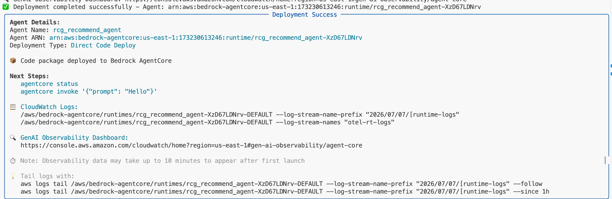

Step 3: Runtime 배포 ⏱️ 15분 ★★☆¶
✓ Step 1 Gateway
✓ Step 2 Agent
● Step 3 Runtime
○ Step 4 Observability
이 Step의 목표
로컬에서 동작 확인된 Agent를 AgentCore Runtime에 배포합니다.
결과: HTTPS 엔드포인트가 생성되어 누구나 호출 가능한 서비스가 됩니다.
scripts/deploy-agent.sh
Runtime이란?¶
로컬 실행: python3 agents/phase1_recommend.py → 내 PC에서만 동작
Runtime 배포: agentcore deploy → HTTPS 엔드포인트 (전세계)
Runtime의 가치:
- Agent 코드를 서버리스로 실행 (인프라 관리 불필요)
- HTTPS + SigV4 인증 (보안)
- 자동 스케일링 (동시 호출 처리)
- Observability 자동 활성화 (Trace, Logs)
3-1. 배포 실행¶
cd ~/workshop/starter-code
chmod +x scripts/deploy-agent.sh
./scripts/deploy-agent.sh agents/phase1_recommend.py rcg_recommend_agent
또는 직접 명령어로:
# Configure
agentcore configure \
--entrypoint agents/phase1_recommend.py \
--name rcg_recommend_agent \
--runtime PYTHON_3_12 \
--deployment-type direct_code_deploy \
--execution-role "${RUNTIME_ROLE_ARN}" \
--disable-memory \
--non-interactive
# Deploy
agentcore deploy \
--env AGENTCORE_GATEWAY_URL="${AGENTCORE_GATEWAY_URL}" \
--env AWS_REGION="${AWS_REGION}" \
--auto-update-on-conflict
Deprecated 경고 무시
agentcore CLI 실행 시 "Starter Toolkit is deprecated" 경고가 나올 수 있습니다.
무시해도 안전합니다. 워크샵에서는 정상 동작합니다.
억제하려면: export AGENTCORE_SUPPRESS_RECOMMENDATION=1
배포 시간: 약 3~5분
내부적으로: 코드 패키징 → S3 업로드 → Runtime 생성 → 엔드포인트 활성화
배포 완료 시 출력 화면
아래와 같이 Deployment Success 패널이 표시되면 성공입니다:

- Agent ARN — 배포된 Agent의 고유 식별자
- CloudWatch Logs — 실시간 로그 확인용 경로
- GenAI Observability Dashboard — Step 4에서 사용할 대시보드 URL
3-2. 배포 상태 확인¶
정상 출력
3-3. 배포된 Agent 호출 테스트¶
agentcore invoke \
--name rcg_recommend_agent \
--payload '{"message": "고객 C001에게 상품 3개 추천해주세요. 알러지 고려.", "session_id": "test-001"}'
또는 Python으로:
import boto3, json
client = boto3.client("bedrock-agentcore", region_name="us-east-1")
resp = client.invoke_agent_runtime(
agentRuntimeId="rcg_recommend_agent",
runtimeSessionId="test-session-001-abcdef", # 33자 이상!
payload=json.dumps({
"message": "고객 C001에게 적합한 상품 추천해주세요",
}),
)
print(json.loads(resp["response"].read()))
3-4. Harness Playground에서 채팅으로 테스트¶
배포된 Agent를 웹 UI로 직접 대화해볼 수 있습니다:
- Console → Amazon Bedrock → AgentCore → 좌측 Harness → Playground
- Agent 선택:
rcg_recommend_agent - 채팅창에 입력:
Playground의 가치
- 터미널이 아닌 채팅 UI로 Agent 동작 확인
- Tool 호출 과정이 실시간으로 표시됨
- 여러 메시지를 연속으로 보내며 Agent 행동 관찰 가능
- 팀원이나 비개발자에게 시연할 때 유용
다양한 질문으로 테스트해보세요:
- "고객 C002에게 뷰티 상품 추천해줘"
- "가장 평점 높은 음료 3개는?"
- "견과류 없는 간식 찾아줘"
3-5. 배포 전 vs 후 비교¶
| 항목 | 로컬 (Step 2) | Runtime 배포 (지금) |
|---|---|---|
| 실행 방법 | python3 agents/...py |
HTTPS API 호출 |
| 접근 | 내 PC만 | 인터넷 어디서든 |
| 인증 | 없음 | SigV4 (IAM) |
| 스케일 | 1명 | 다수 동시 |
| 모니터링 | 없음 | Observability 자동 |
| 코드 변경 | 즉시 반영 | agentcore deploy 필요 |
축하합니다!
여러분의 첫 번째 Agent가 프로덕션 엔드포인트로 동작하고 있습니다.
이제 이 Agent의 동작을 실시간으로 관찰해봅시다.